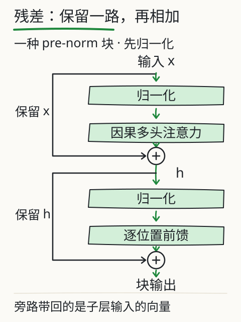
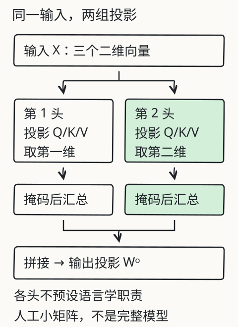

结构回查：注意力怎样拼成一层
先追踪几个向量怎样汇总，再看这一步怎样放进网络。以下来自同源 Transformer 修订章；数值是可复算的人工例子，不是实际模型内部读数。
注意力之外，还有什么？
原始编码器每层包含多头自注意力和逐位置前馈网络，外加残差连接与层归一化。现代实现可能采用 pre-norm、不同激活函数、位置表示或其他层结构；“6 层、512 维”是原论文配置，不能当成当前模型的通用规格。
前馈层在各位置使用相同参数，做非线性变换；原论文写作 FFN(x)=max(0,xW₁+b₁)W₂+b₂。残差把子层输入与输出相加，归一化调整单个位置的特征尺度，帮助训练深层网络，但不保证训练一定稳定。原论文是 LayerNorm(x+Sublayer(x)) 的 post-norm；课程深入图采用 x+Sublayer(Norm(x)) 的 pre-norm 示意，两种顺序不能混写。

先分清可见位置与目标
对某个位置，先算 QKᵀ / √d_k，再对可见位置做 softmax，最后用权重汇总 V：
Attention(Q, K, V) = softmax(QKᵀ / √d_k + M)V
M 在可见处加 0，在屏蔽处加负无穷。decoder-only 教学例里，输入位置 i 可以看自己及更早位置，用来预测 i 后的 token；不能看未来目标。训练时输入与预测目标错开一位，这才避免把答案提前给模型。注意力输出只是网络中的一个子层，注意力权重不能单独当作完整解释。
各头汇总后，还要怎样混合？
head_i = Attention(QW_i^Q, KW_i^K, VW_i^V)
MultiHead(Q,K,V) = Concat(head_1, …, head_h)W^O
在本地的双头练习中，输入是三个二维向量，两个头各投影成一维，位置 2 只能看前两个位置。程序实际算出两头的权重和输出，再拼接、乘以 W^O。这能展示矩阵关系，但没有训练、位置编码、残差、归一化或完整 Transformer 层。

人工输入 X=[[1,0],[0,1],[1,1]]，当前为第 2 个位置。各头投影矩阵见同源 fixture；本例两头 d_k=1，缩放因子为 1。
| 本地计算 | 第 1 头 | 第 2 头 |
|---|---|---|
| 掩码后权重 | [0.500000, 0.500000, 0.000000] | [0.268941, 0.731059, 0.000000] |
| 加权 V 输出 | [0.500000] | [0.731059] |
拼接结果为 [0.500000, 0.731059]，经过人工输出矩阵后得到 [1.231059, -0.231059]。表中数值由源码计算后保留六位小数。
在行向量约定下，拼接 [a,b] 乘 W^O=[[1,1],[1,-1]] 得 [a+b,a-b]。改掉输出投影矩阵，最终结果也应变化；把未来第三行改得很大，第二位置的输出仍应不变。记录按第 1、2、3 位置称呼，源码索引从 0 开始。
在仓库根目录运行 node book/llm/examples/multihead.mjs 查看完整 Q/K/V、权重与输出；改变未来输入、当前可见输入或输出矩阵，再检查哪一步变化。
三条架构路线
| 路线 | 常见用途 | 关键边界 |
|---|---|---|
| 仅编码器 | 表示、分类、抽取 | 不是天然的逐 token 自回归生成器 |
| 仅解码器 | 续写、对话、代码生成 | 因果掩码限制当前位置读取未来 |
| 编码器—解码器 | 翻译、摘要、序列转换 | 解码器可通过交叉注意力读取输入表示 |
名称只是架构路线，不能仅凭名字推断某个具体产品的训练数据、工具能力或性能。课程的生成主线使用 decoder-only 作为常见示例。
位置怎样进入计算？
可学习位置嵌入给位置配置可训练向量；相对位置方法用位置差参与计算；RoPE 通过旋转 Q/K 使注意力分数带有相对位置关系；ALiBi 在注意力分数上加入与距离有关的偏置。这些方案不都把位置向量直接加到输入。长上下文表现仍取决于训练长度、扩展方法和实现；采用 RoPE 不自动支持任意长度。
精确计算与计算成本
标准全注意力在序列长度为 N 时，注意力分数矩阵的长度项通常呈 N²；实际内存和时间还受头数、维度、批量、硬件和实现影响。FlashAttention 通过分块和 IO-aware 实现减少 GPU 内存读写，仍计算精确注意力，不能把它说成把算法复杂度普遍变成线性。稀疏注意力、线性注意力和滑动窗口是不同取舍，也不能互相当作同义词。
可解释性也有边界：注意力权重只描述一个子层的加权关系，不能单独证明模型的完整因果理由。长上下文、位置外推、多模态对齐和能耗都需要针对版本与任务测试。
自己检查一次
- 第二位置可见的输入能否包含未来第三位置？它在预测哪个位置？
- 把 W^O 换为单位矩阵，输出还会是两头的和与差吗？
- encoder-decoder 的交叉注意力，在 decoder-only 中也必然存在吗？
- 采用 FlashAttention 或 RoPE，能否推出任意长文本均能处理？
核对依据：本例第二输入位置只看前两项，用来预测下一项；单位矩阵保留拼接值；decoder-only 省略编码器交叉注意力；内存优化与位置关系均不保证无限窗口或可靠外推。
来源与范围
原始结构、公式与 post-norm 见 Transformer 论文；RoFormer和 FlashAttention按其论文范围解释。实际模型练习继续用 DeepSeek V4.1 Flash 与 Kimi K3，未采集内部状态、输出或性能。